You are here: Mozilla Editor > Miscellaneous Composer Dialogs
Miscellaneous Composer Dialogs
by Charles Manske1. Horizontal Line Properties
Windows: 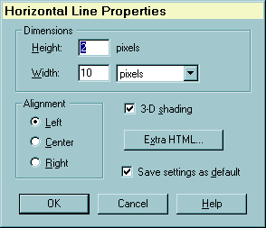
Mac: 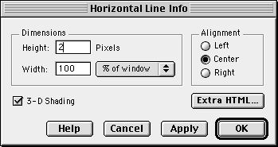
Invoke
- When a horizontal rule element is the only thing selected, the dynamic "Properties" item in the Format menu should say: "Horizontal Line Properties." This will bring up the Horizontal Line dialog.
- Double click on a horizontal line.
- Note: We do not invoke this dialog when creating a new horizontal line (Insert | Horizontal Line), unlike other inserted objects such as table, image, target, and HTML tag, because this is a relatively simple object and thus will most likely be used with the same properties as the last horizontal rule inserted. The initial values of Height, Width, Alignment, and 3-D Shading should be obtained from Editor Preferences (editor.hrule.height, editor.hrule.width, editor.hrule.width_percent, editor.hrule.shading, and editor.hrule.align ) rather than the usual method of getting settings from the user.
Initialization
1. Get the properties of the selected horizontal line and fill in matching fields in the dialog:
| HTML Parameter | Dialog Control |
|---|---|
| HEIGHT | Write value into Height editbox |
| WIDTH | Write value into Width editbox. If the WIDTH value uses "%", then set the Width Units combobox to "% of window" If WIDTH is not in %, Display the text "pixels" in the combobox. |
| CENTER, RIGHT | Set appropriate Alignment radio button for Left, Center, and
Right alignment. Default when parameter is missing is "Left" |
| NOSHADE | If NOSHADE parameter is present, then clear the 3-D shading
checkbox. Default when not present is to check this checkbox. |
2. The "Save settings as default" checkbox is checked the first time this dialog is used during the current session. If the user changes this setting, we store it in a global variable so the checkbox is the same as the user's last setting, but only during this editing session.
Actions
| Click Button | Response |
|---|---|
| OK or Apply |
Get the state of the controls and save the Height, Width, and
NOSHADE values
|
| Cancel | Dismiss the dialog and do not change any settings |
| Extra HTML | Popup the Extra HTML dialog and save the resulting string as the "extra HTML" for the HRule element. |
| Help | Bring up help for this dialog. Remain in dialog. |
Enhancements
- When the current selection is a single Horizontal line, using "Insert | Horizontal line" edits the properties of the object rather than inserting a new one. We should decide if that is the behavior we want, as discussed in the Image dialog enhancements.
- The "% of window" text in the Width units combobox should be changed to "% of parent" when the HRule location or insert point in within a table cell.
- Note the differences between the current Windows and Mac versions.
The Windows version is missing the "Apply" button and the Mac version
is missing the "Save settings as default" checkbox. I think both should
be present, so here is a suggested layout with all controls (note that
the locations of OK and Help should be reversed for the Mac):
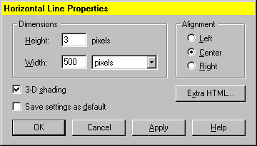
2. Target Properties
Windows: 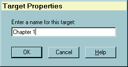
Mac: 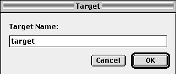
"Target" is Netscape's term for a "named anchor" tag. We have been using that since the first Composer version and believe it is clearer. Because of the "Target" frame concept, we should revisit this issue.
Invoke
- Menu: Insert | Target to create a new target. Caret can be anyplace in the document and anything can be selected.
- Toolbar: Target button (edit properties of existing target if it is the only thing selected, else we will create a new target)
- Menu: Format | Target Properties, when the only item selected is an existing target.
- Double click on an exisiting target (first mouse down should select the target)
Initialization
- Get the current selection in the document.
- If a single existing target is selected, then this will change this element.
- If a single target is not selected, then we will insert a new target
- Get the currently-selected text from the document to use as the
initial string in the target editobox. This string should be processed
to:
- Strip out extra spaces and the beginning and end
- Replace all whitespace characters (tabs, linefeeds, etc.) with spaces
- Limit the length of the text to be used in case selection is very large (about 80 characters maximum?)
Dialog Rules
Disable the OK button when the target editbox is empty
Actions
| Click Button | Response |
|---|---|
| OK |
|
| Cancel | Dismiss dialog and do not change an existing target and do not insert a new target. |
| Help | Popup help for targets. Remain in target dialog. |
Enhancements
- When the current selection is a single target, using "Insert | Target" edits the properties of the object rather than inserting a new one. We should decide if that is the behavior we want, as discussed in the Image dialog enhancements.
- Currently this is the only "object property" dialog that does not include an "Extra HTML" button (this is a reported bug.) For consistency, we should probably add this functionality to the Target Properties dialog.
3. HTML Tag
Windows: 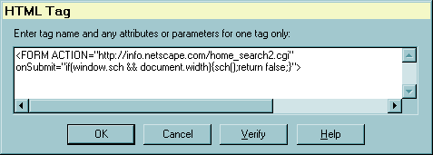
Mac: 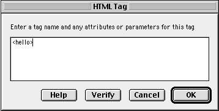
Invoke
Menu: Insert | HTML Tag
Note: We have a toolbar button in 4.x and earlier versions (the so-called "poof" button), but we decided to remove this button for the 5.0 toolbar (primarily to save space). If the new toolbars will user-configurable, we should consider including it as an optional button to add, but it is not in the default set.
Initialization
- Get current selection in the document:
- If an existing "unknown" html tag is the only element selected, then use the contents of this tag to fill the multiline editbox.
- If an unknown tag is not the selection, then we will insert a new tag.
Actions
| Click Button | Response |
|---|---|
| OK | Insert the HTML tag into the document at the current insertion point (caret location) and close the dialog. |
| Cancel | The usual - change nothing and insert nothing |
| Verify | All we do now is check that the first and last characters (after stripping spaces from the ends) of the string are "<" and ">" respectively. |
Enhancements / Issues
- The Verify button doen't do anything more than check for matching "<" and ">". We should either improve this to do something more useful or remove the button.
- When the current selection is a single existing HTML tag, using "Insert | HTML Tag" edits the properties of the object rather than inserting a new one. We should decide if that is the behavior we want, as discussed in the Image dialog enhancements.
- The use of this dialog is much less clear with the new document model and layout engine. We certainly should not have any "unsupported" HTML tags like we did before, although this could be used to insert and edit an arbitrary tag. The problem is that the new Editor is not supposed to know anything about HTML per see, just the DOM contents, so it is unclear to me how to set the contents of an "unknown" or arbitrary tag using the DOM. The solution may be to be sure the user string is well-formed HTML and pass it through the parser using the same method we will need to paste HTML into the document.
- We have discussed replacing this with a more sophisticated dialog that might be designed as a generic Property Dialog, ala Visual Basic property inspectors, so a list of arbitrary tag parameters are used to build a grid where the left column contains these parameters and each has a combobox to the right where all possible legal values for that parameter are filled in. This combobox is used to edit the state of the attribute. The "possible legal values" must be obtained from a DTD describing the "unknown" tag and all its parameters and possible values.
4. Extra HTML
Windows: 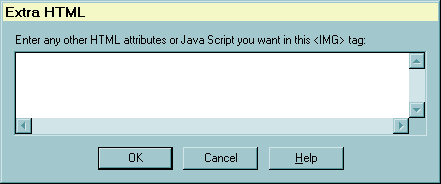
Invoke
From the "Extra HTML" button present in most "object" property dialogs: Link, Image, Horizontal Line, Table, and Table Cell.
Initialization
Get the "extra HTML," which is all the text in a tag remaining after all editor-supported parameters are parsed out, from the relevant tag.
This is most commonly scripting contents, but also will contain, for example, the contents of the USEMAP parameter for the <IMG> tag end up in extra HTML.
Actions
| Click Button User Action |
Response |
|---|---|
| OK | Update the contents of the tag associated with this string |
| Cancel | Dismiss the dialog and change and insert nothing |
| Help | Bring up help topic for extra HTML |
Enhancements / Issues
The use of this dialog in the new editor is problematic, given that we are only supposed to modify a document via the DOM. We might redesign this dialog to reflect these architectural changes in how the editor works, such as those suggested for the HTML Tag dialog.
Another possibility is to not support editing arbitrary "extra parameters" in the new UI, but rather use the modularity of the new editor to replace "simple" with "advanced" versions of property dialogs to support different levels. In this case, we would probably need at least a "Java Script" button in all object property dialogs since that will be the most common usage. This JavaScript button would bring up a simple editor identical in format to the current Extra HTML dialog, unless we want to get fancy and support specific JS attributes for particular element types (this should definitely be on a "future features" list.)
5. Remove All Character Styles
Windows: 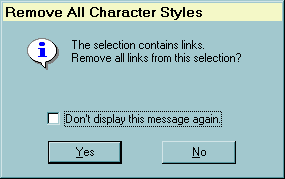
Mac: 
Invoke
When using the menu command "Format | Remove All Styles" or the "Remove all styles" toolbar button is used and:
- The current document selection contains one or more links and
- The preference "editor.hints.removelinks" is non-zero
Initialization
All strings in the dialog may be static.
This is currently a "generic hint dialog," i.e., the dialog caption and message strings at the top of the dialog are passed in so the general format can be used for similar dialogs where we want to have a preference tied to the "don't bother me again" checkbox. The current 4.5 version doesn't use the other versions of the hint dialog, so we may not need to make this generic dialog for the 5.0 version
Actions
When either "Yes" or "No" is pressed:
- Continue clearing all character attributes in the selection, but remove the links only if the user clicked the "Yes" button.
- If the "Don't display this message again" checkbox is checked, set the preference "editor.hints.removelinks" to 1.
- Dismiss the dialog
Enhancements
Resolve differences in design between different platform versions.
6. Numeric Range Error
Windows: 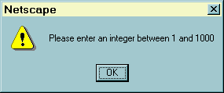
Mac: 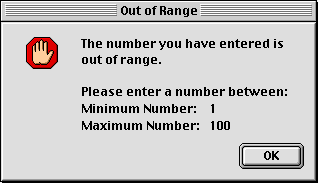
Invoke
Used by numerous property dialogs when an user-enterred editbox or combobox value is outside of a given range of integers.
Initialization
Fill in the minimum and maximum allowable values (passed into the dialog) into the message string and display this message.
Actions
After user clicks OK, dismiss the dialog and put the focus in the edit field where the error occured
Enhancements
Resolve differences in design between different platform versions.